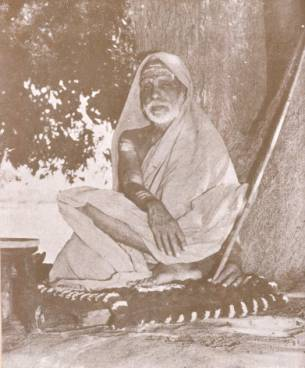

‘TRIVENI’
HAS SHED LIGHT ON MY PATH.
BLESSED BE HER NAME!

His
Holiness Sri Chandrasekharendra Saraswati
Acharya
Swami of Sri Kanchi Kamakoti Peetam
The
public of India, and especially of the South, recently celebrated the Golden
Jubilee of the accession of His Holiness Sri Chandrasekharendra Saraswati to
the Gadi of Sri Kamakoti Peetam of Kanchi. His Holiness was a lad of
thirteen when his pontificate commenced. Five decades have passed, since then,
and each decade has meant added lustre to this ancient seat of spiritual power
and beneficence. All over India, and in many foreign lands the name of the
Acharya Swami is deeply reverenced, and whenever the Peetam is mentioned there
is an outpouring of rare devotion. As an embodiment of the traditional culture
of India, and a discerning admirer of the nobler aspects of every other
culture, the Acharya Swami has been a Light to all aspiring souls.
It
is pleasant to recall that the Acharya Swami was one of the earliest to
recognize the literary gifts of the late K. S. Venkataramani. Venkataramani
included a fine sketch of the Acharya Swami in his delightful ‘Paper Boats’;
When Venkataramani published his great novel of contemporary Indian life,
‘Murugan the Tiller’, the Acharya Swami attached such significance to the novel
that he purchased several hundred copies of the book and sent them to the Members
of the ‘British Parliament and to leading writers and thinkers. In later years,
the Acharya Swami presented an inscribed ivory shield and embroidered shawls to
Venkataramani who always cherished them as his choicest treasures. This is but
a single instance out of many gracious tokens of the Acharya Swami’s patronage
of creative endeavour in many spheres.
‘Triveni’
offers loving homage to the Acharya Swami on this great occasion and trusts
that the Samskrita University proposed to be reared his honour will soon be
inaugurated. Sri Chandrasekharan’s tribute to the Acharya Swami published in this
number of the journal is a gem of rare quality and worthy of the Living Flame
which sheds its Light from Kanchi.
It
is difficult to describe in words the grief that overwhelmed Andhra on the
passing away of the veteran leader Sri T. Prakasam. Not only to individual
friends and fellow-workers, but to large masses of men and women from all ranks
of life, this event came as a personal sorrow–as the end of a glorious epoch in
our national history. That he loved Andhra and gave his all for the integration
of Andhra’s political and social life, that he was greatly daring and knew no
fear, that he faced poverty and personal unhappiness with remarkable equanimity
like the heroes extolled in our Epics–these and many more things have been said
of this lion-hearted veteran of whom Andhra is justly proud.
But
Sri Prakasam’s life of sacrifice and heroism has an all-India importance. Along
with the noble stalwarts of 1920–Motilal Nehru, Chittaranjan Das, Rajendra
Prasad and Vallabhbhai Patel–Prakasam responded to the call of the Mahatma and
gave up a very lucrative practice at the Bar. He was immediately in the
forefront of the freedom struggle which then was represented by the
Non-Co-operation movement. The Press and the platform were the most powerful
instruments for rallying the nation to the Mahatma’s banner. Prakasam toured
incessantly and addressed huge audiences. But he realised that a daily
newspaper wedded utterly to the ideals of the resurgent
National Congress was a dire necessity. The moment when he decided to launch
‘Swarajya’, the magnificent English Daily of Madras, was perhaps the
greatest moment in his life. It marked the commencement of his glory and his
agony. ‘Swarajya’ was much more to him than what the ‘Independent’ was to
Motilal Nehru or the ‘Advance’ was to Chittaranjan Das. To it, he gave his
life-blood; to sustain it he ran through his entire property. It was a great
adventure in the history of Indian journalism. It was a nursery of patriotism,
a school for the training of the fearless type of journalists, and a symbol of
hope for those to whom journalism is an urge towards self-fulfilment.
It
is common knowledge that ‘Swarajya’ failed for lack of business ability and
organisational skill. The fittest tribute which a grateful people can pay to
the memory of Prakasam is to start a first-class English Daily in Hyderabad and
name it ‘Swarajya’. In this new venture should be combined the idealism of the
old ‘Swarajya’ and the practical wisdom and efficiency of ‘The Hindu’.
The new ‘Swarajya’ appearing from Andhra Pradesh should promote understanding
between North and South and mirror the unity of India, even as Prakasam
mirrored it in his life. His roots were in Andhra, but his outlook was that of
an Indian statesman planning the progress of our common Motherland.
To
me and to friends like G. V. Krupanidhi, Khasa Subba Rau and V. Bhaskaran who
were privileged to work on the ‘Swarajya’, our association with Prakasam will
be an abiding memory. The memory is that of high endeavour, of cheerfulness in
the midst of privation, of living for the day without taking thought for the
morrow. I left ‘Swarajya’ after a brief two-year tenure as assistant-editor, to
work for some years in the Andhra Jateeya Kalasala of Masulipatam under the
guidance of my other chief, Dr. Pattabhi Sitaramayya. Then came Triveni in
1928. But I have always considered myself an ‘old boy’ of ‘Swarajya’, which
repeated on a humbler scale the story of ‘Swarajya’. Between Prakasam and
myself there was a close bond. His affection for me was genuine and he was ever
solicitous of my welfare. At this moment of utter desolation of spirit, I, like
many others, derive comfort from the thought that two elder statesmen of the
South, Rajaji and Dr. Pattabhi, are still with us. They loved Prakasam and
admired him for his heroic qualities, despite frequent disagreement. India owes
a great deal to the example set by these three leaders through the roles they
played in the history of the country in an eventful period.
This
year marks the centenary of what was once known as the Sepoy Mutiny and what we
gradually learnt to call the First War of Indian Independence. Bahadur Shah and
Nana Sahib, Tantia Tope and Rani Lakshmi Bai of Jhansi were branded by the
British as rebels against lawfully constituted authority, as disturbers of the
peace which Britain had vouchsafed to India. Their success would have meant,
according to the British writers of Indian history, a setback to Indian
progress and a return to the state of feudal anarchy which followed the decline
of the Moghul Empire. Even patriotism was not a virtue in the case of these
fighters for India’s rights, and nobility and valour were conceded somewhat
grudgingly to the Rani of Jhansi.
It
was the ruthless annexation policy of Dalhausie which formed the root cause of
the opposition to British rule, and the discontent in the Army gave it the
character of a military mutiny. In several parts of the sub-continent, the mass
of the population and the cultured classes who accepted service with John
Company held aloof. The lack of cohesion among the top-ranking leaders, and the
absence of efficient generalship, brought about the failure of our first
freedom struggle. But it served as a warning to the rulers that all was not
well with the administration of India by a company of traders, and a
change-over was effected from company rule to rule by Viceroys representing the
Sovereign of Britain. To this limited extent, the struggle achieved success. In
the wake of peace and orderly administration and the founding of the
universities, a new class of intellectuals grew up, whose admiration of British
Parliamentary institutions led them to sponsor the movement for self-rule under
the aegis of Britain. The National Congress, in its early stages, was the
organisation of these progressive elements in our middle class, with a
sprinkling of the landed aristocracy.
It
was about 1907 that there was another attempt to over-throw British rule in
India, not by open war but by terrorist methods including the sporadic use of
the bomb and the revolver. A small but determined group at the India House,
London, supplied the intellectual pabulum for the growing terrorist movement.
The smuggling of copies of Sri Savarkar’s ‘Indian War of Independence’–rendered
from Marathi into English by V. V. S. Iyer and others–helped largely to foster
the new idealogy and the new interpretation of the events of 1857. The
terrorist movement had its ramifications in secret corners of India and among
groups scattered over the continent of Europe. The movement reached its peak of
influence during the First World War and it was urged by the Leaders that
Britain’s preoccupations in the West offered the most suitable opportunity for
a nation-wide struggle accompanied by secret violence. Germany was expected to
supply arms to aid the Indian insurrection.
Into
this atmosphere of hate and violence Gandhiji brought his gospel of love and
non-violence. He joined the Congress and filled it with his own faith in
peaceful–not necessarily ‘constitutional’–methods of political struggle. He
initiated our second great struggle for freedom and carried it to success in
1947.
Looking
back on the history of the last hundred years, it becomes possible to study
events in their proper perspective. We realized the heroism of the leaders of
1857 and the essential nobility of their aims. India has won through to success
by a method different from theirs. But their vision of a free India was a
splendid one and the sacrifices they made will stand for ever in the nation’s
memory.
To
secure freedom is one thing; to utilise that freedom to noble ends and work for
a united, prosperous, egalitarian society is another, far heavier
responsibility. Pandit Nehru’s emphasis on this aspect of our immediate task is
praiseworthy. The best elements in our national life must rally round him.
Having won freedom through non-violence, India has to press for the recognition
of this principle in the sphere of international relations.
Memorials
will be raised to the heroes of 1857. Their valiant deeds, and their passionate
longing to rid India of foreign rule will be celebrated in story and song. And
in the re-building of India after a noble pattern, the memory of their striving
and sacrifice must continue to inspire us. We live in a different world, and
our problems and our aspirations are not the same as in 1857. But there is a
continuity in the life of a nation, and what makes for that continuity is the
memory of what our ancestors hoped for and achieved through
the ages.